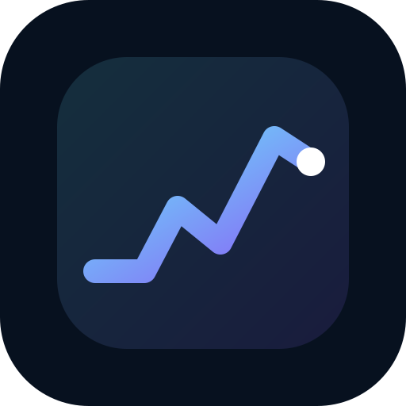

🌐 Web
Open the full TradeCycle journal directly in your browser. No installation required.
OPEN WEB APP
Your TradeCycle download center. Scroll down and choose Web, Android, or Windows. The same journal engine powers every version.
Open the full TradeCycle journal directly in your browser. No installation required.
OPEN WEB APPInstall the Android APK and use TradeCycle as a normal app with the custom TradeCycle launcher icon.
DOWNLOAD APKInstall the Windows desktop application. The installer creates a normal TradeCycle app shortcut and uses the custom icon.
DOWNLOAD WINDOWS